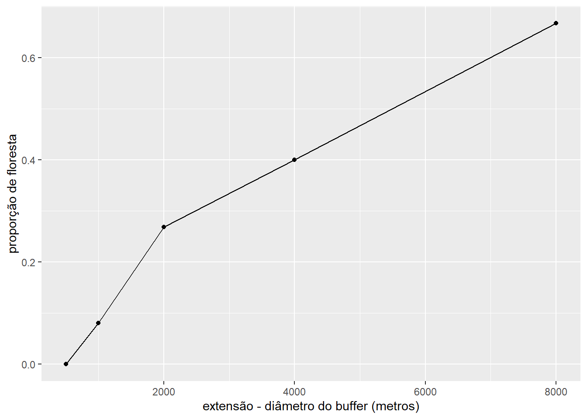

1 Capítulo Escala
Carregar os pacotes necessarios:
1.1 Pergunta 1
Sobre o objeto ramostra. Com base nos resultados obtidos, qual o área do pixel em metros quadrados? Qual o área total da paisagem em hectares e quilometros quadrados?
1.1.1 resposta
Para responder a pergunta você deve revisar o conteúdo no capitulo Escala, especificamente:
A figura mostrando os “componentes de uma raster e suas atributos no pacote terra”.
Os exemplos de codigo mostrando “como obter informações específicas através de funções específicas”.
Sabemos que a sistema de coordenados é “projetado”. Assim sendo, todos os pixels no objeto tem as mesmos dimensões. Portanto, o calculo é mais simples em comparação com o caso onde a sistema de coordenados é geografica (como por exemplo latitude e longitude). Para calcular a área total do raster com um sistema de coordenadas projetado, encontramos o número total de pixels e multiplicamos pela área de cada pixel.
ramostra <- rast(eprdados::amostra_mapbiomas_2020)
total_pixels <- ncol(ramostra) * nrow(ramostra)
area_pixel_m2 <- res(ramostra)[1] * res(ramostra)[2]
area_paisagem_m2 <- total_pixels * area_pixel_m2
area_paisagem_m2[1] 64337.77E agora é so fazer a conversão de metros quadrados para hectares e quilometros quadrados:
# hectares
area_paisagem_m2 / 10000[1] 6.433777# quilometros quadrados
area_paisagem_m2 / 1000000[1] 0.064337771.2 Pergunta 2
Utilizando as funções disponíveis no pacote tmap, crie mapas temáticos dos objetos ramostra_media e ramostra_modal. Inclua cópias do seu código e mapas na sua resposta. Você pode usar o printscreen para mostrar o RStudio com seu código e mapas.
1.2.1 resposta
Para responder a pergunta você preciso trocar o nome dos objetos usado no codigo no capitulo. Por exemplo, segue o novo codigo para crie um mapa temático com o objeto ramostra_media . Neste caso a agregação com a média cria novos valores (incorretos), que não fazem parte da classificação MapBiomas. Assim sendo, também removemos as linhas de código que especificavam uma legenda com as classes MapBiomas.
tm_shape(ramostra_media) +
tm_raster(style = "cat") +
tm_grid(labels.format = list(big.mark = "")) +
tm_compass(position = c("right", "bottom")) +
tm_scale_bar(breaks = c(0, 0.05, 0.1), text.size = 1,
text.color = "white", position=c("right", "bottom")) +
tm_layout(legend.position = c("right","top"),legend.bg.color = "white")1.3 Pergunta 3
Confira o codigo e os resultados obtidos anteriormente, quando mudamos a resolução da raster ramostra (por exemplo figura 1.4). Explique o que aconteceu. Como e porque moudou os valores em cada caso (média e modal)?
1.3.1 resposta
Para responder a pergunta você deve revisar o conteúdo no capitulo Escala, especificamente na seção Alterando a resolução.
Preciso esclarecer e apresentar a sua entendimento sobre porque valores incorretos foram produzidas e porque a proporção de floresta moudou.
1.4 Pergunta 4
Qual é a extensão em número de pixels desse recorte (buffer.forest1.1km)?
1.4.1 resposta
Para responder a pergunta você deve revisar o conteúdo no capitulo Escala, especificamente:
A definação de escala e extensão no contexto de Ecologia da Paisagem.
A figura mostrando os “componentes de uma raster e suas atributos no pacote terra”.
Os exemplos de codigo mostrando “como obter informações específicas através de funções específicas”.
Com base nas informações que já conhecemos, existem diferentes opções para saber a extensão em número de pixels desse recorte buffer.forest1.1km. Como o raio da buffer usado para fazer o corte foi de 1 km podemos estimar sem R, assim:
i) A extensão seria o diametro da buffer (raio x 2 = 2km).
- Sabemos que o resolução (comprimento) de cada pixel é cerca de 29,9 metros. Portanto, a extensão em número de pixels seria aproximadamente: 2000 metros / 29,9 metros = 66,89 pixels.
No R podemos obter o valor exato atraves funções de ncol() e nrow(), respectivamente para extensoes no sentido leste-oeste e norte-sul, assim:
1.5 Pergunta 5
Usando os valores listadas acima de raio e área de floresta para os diferentes buffers circulares, calcule a proporção de floresta em cada uma das diferentes extensões de buffer. Apresente 1) os resultados incluindo cálculos. 2) um gráfico com valores de extensão no eixo x e proporção da floresta no eixo y. 3) Em menos de 200 palavras apresente a sua interpretação do gráfico.
1.5.1 resposta
Com base nas informações que já conhecemos, existem diferentes opções para saber a proporção de floresta em cada uma das diferentes extensões de buffer. A proporção de floresta seria a área de floresta dividido por área total da buffer. Podemos estimar sem R, aqui ilustrando o processo com a buffer com raio de 500 metros:
A extensão seria o diametro da buffer (raio x 2 = 1000 m).
Sabemos que a área de um círculo é pi vezes o raio elevado ao quadrado. Portanto, estimar a área do buffer em metros quadrados: pi X (raio 2) = 3.14 X 250000 = 785000.
Unidades diferentes (raio = metros, área em hectares), portanto calcular área do buffer em hectares. 785000 / 10000 = 78,5 hectares.
Agora que temos tudo nas mesmas unidades podemos calcular a proporção de floresta. A proporção de floresta seria a área de floresta dividido por área total da buffer = 6,3 / 78,5 = 0.08. Ou seja, cerca de 8 % é floresta.
E depois, repetindo o mesmo processo para os outros valores. Isso seria possivel tanto com um calculador, quanto com ferramentas de planilha como Excel e Calc.
Podemos responder usando R assim:
# construir uma data frame com os valores
raio_m <- c(250, 500, 1000,2000, 4000)
floresta_ha <- c(0, 6.3, 84.3, 502.6, 3351)
raios <- data.frame(raio_m = raio_m,
floresta_ha = floresta_ha)
# Unidades diferentes (raio em metros, área em hectares).
# Portanto vamos calcular área de cada buffer em hectares
# e fazer o grafico
raios |>
mutate(ext_m = raio_m*2,
area_buff_m2 = (3.14 * raio_m^2)) |>
mutate(area_buff_ha = area_buff_m2/10000) |>
mutate(prop_floresta = floresta_ha/area_buff_ha) |>
ggplot(aes(x = ext_m, y = prop_floresta)) +
geom_point() +
geom_line() +
labs(x = "extensão - diâmetro do buffer (metros)",
y = "proporção de floresta")
1.6 Pergunta 6
A modelagem multiescala quantifica as condições do ambiente em múltiplas escalas alterando o resolução ou a extensão da análise e, em seguida, avaliando qual das escalas consideradas explica melhor um padrão ou processo. Escolha 1 espécie aquático e 1 espécie terrestre que ocorram na região a montante das hidrelétricas no Rio Araguari. Com base nas diferenças entre extensões (indicados no exemplo anterior) e as características funcionais das espécies (por exemplo área de vida), escolher as extensões mais adequadas para um estudo multiescala de cada espécie.